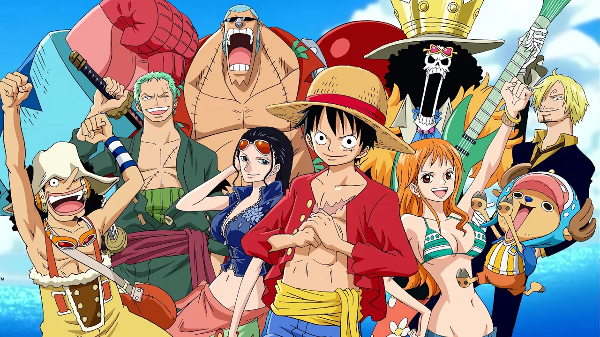

Home
One Piece (stylized as ONE PIECE) is a Japanese manga series written and illustrated by Eiichiro Oda. It has been serialized in Shueisha's Weekly Shōnen Jump magazine since July 1997, with its individual chapters compiled into 97 tankōbon volumes as of September 2020. The story follows the adventures of Monkey D. Luffy, a boy whose body gained the properties of rubber after unintentionally eating a Devil Fruit. With his crew of pirates, named the Straw Hat Pirates, Luffy explores the Grand Line in search of the world's ultimate treasure known as "One Piece" in order to become the next King of the Pirates. In August 2020, it was announced that One Piece was approaching its final arc.
The manga spawned a media franchise, having been adapted into a festival film produced by Production I.G, and an anime series produced by Toei Animation, which began broadcasting in Japan in 1999. Additionally, Toei has developed fourteen animated feature films, one original video animation and thirteen television specials. Several companies have developed various types of merchandising and media, such as a trading card game and numerous video games. The manga series was licensed for an English language release in North America and the United Kingdom by Viz Media and in Australia by Madman Entertainment. The anime series was licensed by 4Kids Entertainment for an English-language release in North America in 2004, before the license was dropped and subsequently acquired by Funimation in 2007.